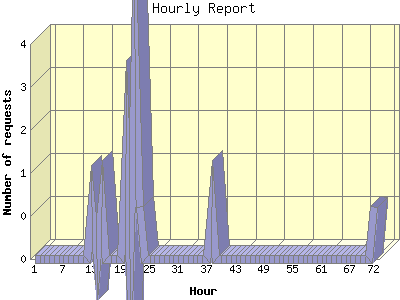

The Hourly Report identifies the level of activity for each hour within the report timeframe. Remember that one page hit can result in several server requests as the images for each page are loaded.

| Hour | Number of requests | Number of page requests | |
|---|---|---|---|
| 1. | Jul 21, 2015 08:00 - 08:59 | 0 | 0 |
| 2. | Jul 21, 2015 09:00 - 09:59 | 0 | 0 |
| 3. | Jul 21, 2015 10:00 - 10:59 | 0 | 0 |
| 4. | Jul 21, 2015 11:00 - 11:59 | 0 | 0 |
| 5. | Jul 21, 2015 12:00 - 12:59 | 0 | 0 |
| 6. | Jul 21, 2015 13:00 - 13:59 | 0 | 0 |
| 7. | Jul 21, 2015 14:00 - 14:59 | 0 | 0 |
| 8. | Jul 21, 2015 15:00 - 15:59 | 0 | 0 |
| 9. | Jul 21, 2015 16:00 - 16:59 | 0 | 0 |
| 10. | Jul 21, 2015 17:00 - 17:59 | 0 | 0 |
| 11. | Jul 21, 2015 18:00 - 18:59 | 0 | 0 |
| 12. | Jul 21, 2015 19:00 - 19:59 | 0 | 0 |
| 13. | Jul 21, 2015 20:00 - 20:59 | 1 | 1 |
| 14. | Jul 21, 2015 21:00 - 21:59 | 0 | 0 |
| 15. | Jul 21, 2015 22:00 - 22:59 | 1 | 1 |
| 16. | Jul 21, 2015 23:00 - 23:59 | 0 | 0 |
| 17. | Jul 22, 2015 00:00 - 00:59 | 0 | 0 |
| 18. | Jul 22, 2015 01:00 - 01:59 | 0 | 0 |
| 19. | Jul 22, 2015 02:00 - 02:59 | 0 | 0 |
| 20. | Jul 22, 2015 03:00 - 03:59 | 2 | 2 |
| 21. | Jul 22, 2015 04:00 - 04:59 | 0 | 0 |
| 22. | Jul 22, 2015 05:00 - 05:59 | 4 | 4 |
| 23. | Jul 22, 2015 06:00 - 06:59 | 1 | 1 |
| 24. | Jul 22, 2015 07:00 - 07:59 | 0 | 0 |
| 25. | Jul 22, 2015 08:00 - 08:59 | 0 | 0 |
| 26. | Jul 22, 2015 09:00 - 09:59 | 0 | 0 |
| 27. | Jul 22, 2015 10:00 - 10:59 | 0 | 0 |
| 28. | Jul 22, 2015 11:00 - 11:59 | 0 | 0 |
| 29. | Jul 22, 2015 12:00 - 12:59 | 0 | 0 |
| 30. | Jul 22, 2015 13:00 - 13:59 | 0 | 0 |
| 31. | Jul 22, 2015 14:00 - 14:59 | 0 | 0 |
| 32. | Jul 22, 2015 15:00 - 15:59 | 0 | 0 |
| 33. | Jul 22, 2015 16:00 - 16:59 | 0 | 0 |
| 34. | Jul 22, 2015 17:00 - 17:59 | 0 | 0 |
| 35. | Jul 22, 2015 18:00 - 18:59 | 0 | 0 |
| 36. | Jul 22, 2015 19:00 - 19:59 | 0 | 0 |
| 37. | Jul 22, 2015 20:00 - 20:59 | 0 | 0 |
| 38. | Jul 22, 2015 21:00 - 21:59 | 1 | 1 |
| 39. | Jul 22, 2015 22:00 - 22:59 | 0 | 0 |
| 40. | Jul 22, 2015 23:00 - 23:59 | 0 | 0 |
| 41. | Jul 23, 2015 00:00 - 00:59 | 0 | 0 |
| 42. | Jul 23, 2015 01:00 - 01:59 | 0 | 0 |
| 43. | Jul 23, 2015 02:00 - 02:59 | 0 | 0 |
| 44. | Jul 23, 2015 03:00 - 03:59 | 0 | 0 |
| 45. | Jul 23, 2015 04:00 - 04:59 | 0 | 0 |
| 46. | Jul 23, 2015 05:00 - 05:59 | 0 | 0 |
| 47. | Jul 23, 2015 06:00 - 06:59 | 0 | 0 |
| 48. | Jul 23, 2015 07:00 - 07:59 | 0 | 0 |
| 49. | Jul 23, 2015 08:00 - 08:59 | 0 | 0 |
| 50. | Jul 23, 2015 09:00 - 09:59 | 0 | 0 |
| 51. | Jul 23, 2015 10:00 - 10:59 | 0 | 0 |
| 52. | Jul 23, 2015 11:00 - 11:59 | 0 | 0 |
| 53. | Jul 23, 2015 12:00 - 12:59 | 0 | 0 |
| 54. | Jul 23, 2015 13:00 - 13:59 | 0 | 0 |
| 55. | Jul 23, 2015 14:00 - 14:59 | 0 | 0 |
| 56. | Jul 23, 2015 15:00 - 15:59 | 0 | 0 |
| 57. | Jul 23, 2015 16:00 - 16:59 | 0 | 0 |
| 58. | Jul 23, 2015 17:00 - 17:59 | 0 | 0 |
| 59. | Jul 23, 2015 18:00 - 18:59 | 0 | 0 |
| 60. | Jul 23, 2015 19:00 - 19:59 | 0 | 0 |
| 61. | Jul 23, 2015 20:00 - 20:59 | 0 | 0 |
| 62. | Jul 23, 2015 21:00 - 21:59 | 0 | 0 |
| 63. | Jul 23, 2015 22:00 - 22:59 | 0 | 0 |
| 64. | Jul 23, 2015 23:00 - 23:59 | 0 | 0 |
| 65. | Jul 24, 2015 00:00 - 00:59 | 0 | 0 |
| 66. | Jul 24, 2015 01:00 - 01:59 | 0 | 0 |
| 67. | Jul 24, 2015 02:00 - 02:59 | 0 | 0 |
| 68. | Jul 24, 2015 03:00 - 03:59 | 0 | 0 |
| 69. | Jul 24, 2015 04:00 - 04:59 | 0 | 0 |
| 70. | Jul 24, 2015 05:00 - 05:59 | 0 | 0 |
| 71. | Jul 24, 2015 06:00 - 06:59 | 0 | 0 |
| 72. | Jul 24, 2015 07:00 - 07:59 | 1 | 1 |
Most active hour Jul 3, 2015 22:00 - 22:59 : 4 pages sent.
Hourly average: 1 pages sent. 1 requests handled.
This report was generated on July 30, 2015 03:16.
Report time frame July 1, 2015 20:43 to July 24, 2015 14:59.
| Web statistics report produced by: analog 5.30 / Report Magic 2.15 |